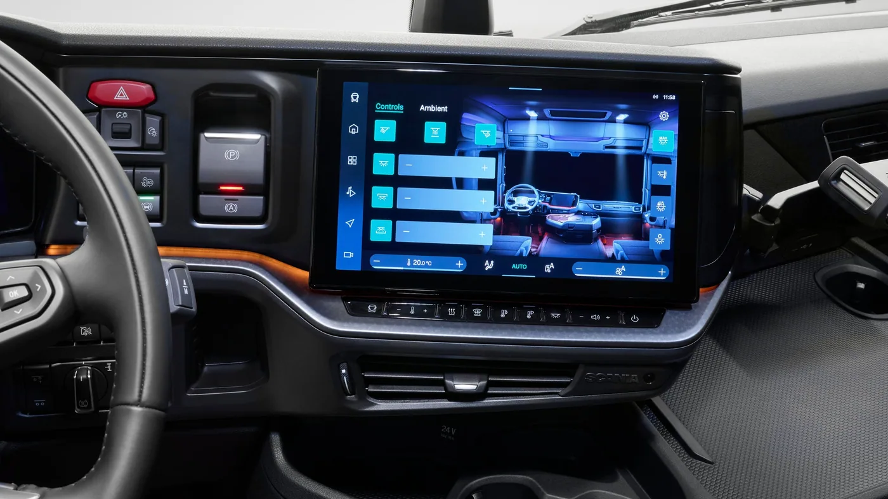

Scania presentó el 14 de septiembre de 2026 cómo sus servicios digitales y Services 360 acompañan a Dynamic. El anuncio completa las novedades de vehículo ya difundidas, pero centra la atención en el uso diario y el respaldo durante la vida de trabajo.
La propuesta incluye Scania Driver para consultar información y funciones del vehículo, ProDriver como apoyo al desempeño del conductor y Services 360 como oferta modular de mantenimiento, reparaciones y herramientas digitales. El objetivo comunicado es coordinar mejor disponibilidad y planificación.
La nota procede de Scania España. No establece que todas esas funciones o coberturas estén incluidas en cualquier contrato argentino. Su disponibilidad debe confirmarse para el vehículo, el mercado y el servicio contratado.
De tener información a utilizarla
Análisis de Zabala Repuestos. Una flota puede recibir muchos datos y seguir teniendo dificultades para organizar una intervención. El paso decisivo es definir qué situación requiere atención, quién la recibe y cómo se comunica la respuesta. Sin esa organización, una pantalla más no resuelve la coordinación.
Un ejercicio útil consiste en reconstruir una consulta reciente desde el primer aviso hasta su cierre. Dónde se perdió tiempo, qué antecedentes faltaban y quién esperaba una respuesta permiten reconocer necesidades concretas. Después puede evaluarse qué herramienta ayuda en cada etapa.
El conductor necesita una rutina comprensible
La formación debería explicar qué información consultar y a quién comunicar una observación. No conviene que el usuario tenga que interpretar por su cuenta mensajes desconocidos durante el trabajo. Las instrucciones deben corresponder a la configuración y al servicio que realmente utiliza.
También importa separar consulta y decisión técnica. Informar un síntoma no es diagnosticar una falla. La organización debe facilitar que la observación llegue al personal adecuado, con los datos necesarios para decidir el siguiente paso.

La cobertura debe poder explicarse sin ambigüedades
Antes de contratar atención, conviene conocer tareas incluidas, exclusiones y procedimiento de asistencia. La empresa debería identificar qué sucede ante una consulta habitual y qué cambia en una inmovilización. Un nombre de paquete no reemplaza esa explicación.
Para una flota que trabaja en distintas zonas, interesa confirmar dónde puede recibir atención y cómo se coordinan los turnos. Esas respuestas permiten integrar el mantenimiento a la planificación comercial, sin suponer que toda cobertura funciona de la misma manera en cualquier lugar.
Un historial útil también registra pendientes
El registro de una unidad debería permitir distinguir recomendaciones, tareas programadas y trabajos completados. Si esos estados se mezclan, la persona que planifica el próximo viaje puede asumir que una intervención ya ocurrió cuando todavía espera turno.
También conviene conservar los datos que acompañaron una consulta: fecha, condiciones de uso e identificación del componente cuando corresponda. Esa continuidad ayuda a que el taller no tenga que comenzar desde cero cada vez que reaparece una observación.
Cómo evaluar una herramienta de flota
- Definir el problema que se quiere resolver antes de activar funciones.
- Asignar responsables para recibir y cerrar consultas.
- Comprobar que conductores y taller entiendan el procedimiento.
- Revisar qué información queda disponible después de una intervención.
- Comparar el proceso con el anterior, registrando cambios y pendientes.
La evaluación puede centrarse en hechos sencillos: si una consulta llegó completa, si encontró responsable y si quedó una respuesta documentada. Ese seguimiento permite reconocer mejoras sin atribuir automáticamente todos los resultados de la flota a una aplicación.
Relevancia para los talleres argentinos
La presentación recuerda que el mantenimiento también depende de la calidad del intercambio de información. Para el taller local, recibir una identificación precisa y un historial claro puede ser tan importante como contar con el componente correcto.
Antes de trasladar la oferta europea, corresponde confirmar funciones y cobertura con el proveedor argentino. La novedad digital debe integrarse al trabajo real: una rutina que las personas entiendan, responsabilidades claras y registros que sigan siendo útiles cuando cambia quien atiende la unidad.